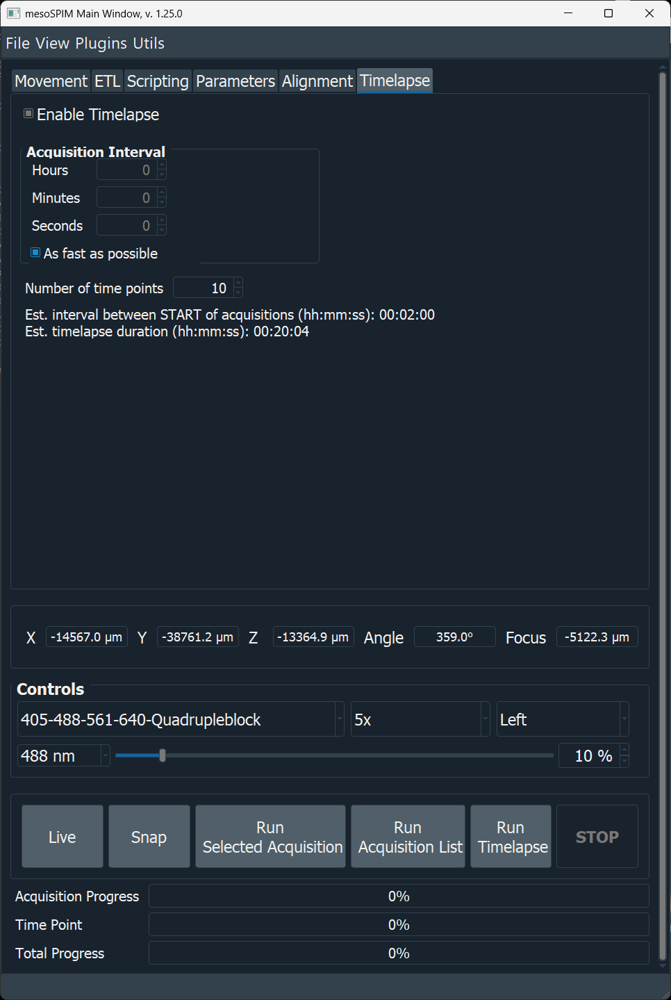
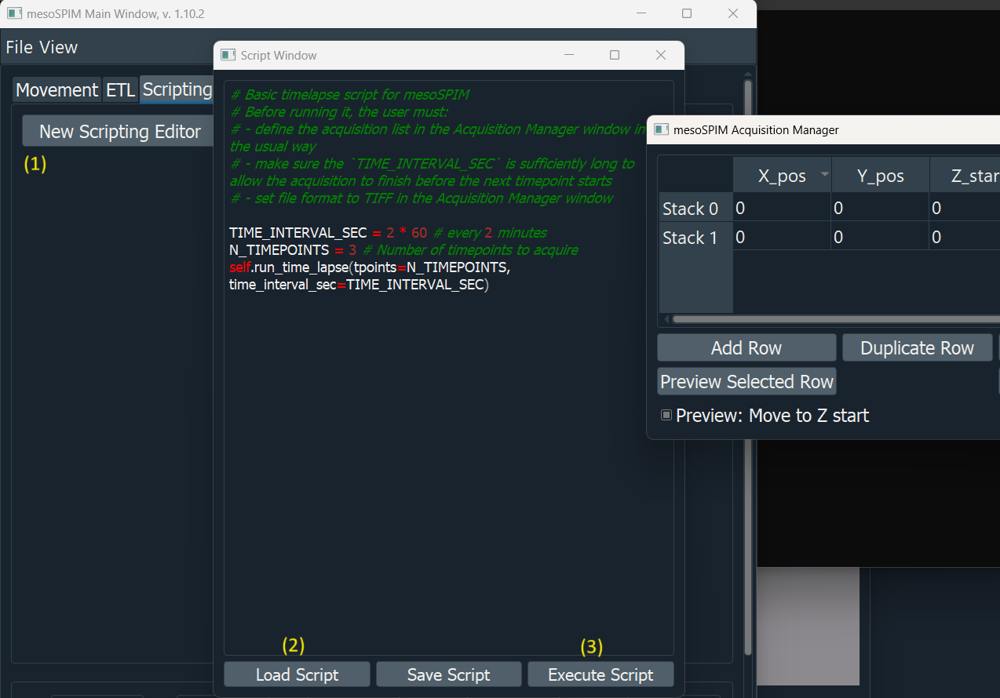

Time-lapse Acquisitions¶
Timelapse on mesoSPIM? Why not! Although originally mesoSPIMs were designed for fixed and cleared samples, they can also be used for live imaging of small transparent organisms (e.g. plants, embryos, larvae) that change over time.
The Timelapse tab in the Main window repeats the current acquisition list at defined time points. Each time point runs the exact same acquisition list configured in the Acquisition Manager.
{kind=link}

The Timelapse tab: Acquisition Interval, number of time points, and the live estimate label.¶
Tip
Build and test your acquisition list first with Run Acquisition List (a single time point). Once the timing and output look right, switch to the Timelapse tab to repeat it automatically.
Configuring a time-lapse¶
Build the acquisition list in the Acquisition Manager as usual (position, channels, Z-stack range, image writer, filenames).
Open the Timelapse tab and check Enable Timelapse. This only enables the Run Timelapse button — it does not change how any other acquisition mode behaves.
Set the Acquisition Interval (Hours / Minutes / Seconds), or check As fast as possible to skip waiting between time points entirely (the Hours/Minutes/Seconds spin boxes are disabled while this is checked).
Set the Number of time points.
Click Run Timelapse.
Warning
Time-lapse acquisitions have only been tested with the Tiff_Writer /
Big_Tiff_Writer image writers (one TIFF stack per row in the
Acquisition Manager window, via the _TimeNNN filename tag described
below). Acquisitions with multiple stacks (channels and/or tiles) are
natively supported, each stack is written in its own TIFF file with the
_TimeNNN tag. OME-ZARR and HDF5/BigDataViewer output are not yet
supported for time-lapses — those writers are built around a single
container per acquisition list and are not confirmed to handle being
re-opened and re-written once per time point.
Important
The Acquisition Interval is the wait time between the end of one acquisition and the start of the next — not between the start times of two consecutive acquisitions. The next time point never starts before the previous one has fully finished, so with a short interval (or As fast as possible, which uses a zero-length interval) the real time between the start of consecutive acquisitions is approximately the interval plus the duration of one acquisition, not the interval alone.
What happens at each time point¶
For every time point, mesoSPIM:
Appends a zero-padded
_TimeNNNtag to every filename in the acquisition list (e.g.sample_Time000.tiff,sample_Time001.tiff, …), replacing any_TimeNNNtag left over from a previous run so filenames don’t keep growing.Runs the full acquisition list exactly like Run Acquisition List.
Once finished, waits for the configured Acquisition Interval (skipped entirely if As fast as possible is checked).
Starts the next time point, until the configured number of time points is reached or Stop is pressed.
Clicking Stop aborts the acquisition currently in progress and cancels all remaining time points; no partially-started time point is left waiting.
Estimated interval and duration¶
Below Number of time points, a label shows two live estimates, refreshed every 2 seconds:
Estimated interval between START of consecutive acquisitions — the configured Acquisition Interval plus the predicted duration of one acquisition list. This is the real spacing between the start of one time point and the start of the next, as clarified above.
Estimated timelapse duration — the total time for the entire sequence:
time points × (one acquisition's duration) + (time points − 1) × interval.
Both estimates are derived from the Acquisition Manager’s predicted
acquisition time (shown next to the acquisition list, and based on the
measured or configured camera frame rate — see average_frame_rate in
Configuration). They update automatically whenever you edit the
acquisition list, the number of time points, or the interval settings, and
become more accurate once real acquisitions have run and the measured frame
rate is known.
Note
These are estimates, not guarantees. Actual timing also depends on stage moves, filter/zoom changes between time points, and processing/writing overhead, none of which are included in the frame-rate-based prediction.
Progress during a run¶
Three progress indicators are active during a time-lapse run:
Indicator |
Meaning |
|---|---|
Acquisition Progress |
Progress of the single Z-stack currently being acquired. |
Time Point |
Which time point is running, out of the total configured. |
Total Progress |
Progress across the entire time-lapse. Its “Remaining” estimate combines the measured remaining time of the current acquisition with the modeled duration (acquisition + interval) of every time point still to come — the same model used for the tab’s duration estimate, so the two should stay consistent with each other. |
The status bar also shows “Waiting for next time point to start” after an acquisition finishes, whenever more time points remain.
Scripting alternative¶
Time-lapses can also be started from the Script window by calling the same underlying method directly:
TIME_INTERVAL_SEC = 2 * 60 # every 2 minutes
N_TIMEPOINTS = 3
self.run_time_lapse(tpoints=N_TIMEPOINTS, time_interval_sec=TIME_INTERVAL_SEC)
{kind=link}

Starting a time-lapse from a script (pre-dates the Timelapse tab, but the underlying scheduling is the same).¶
This is useful if the time-lapse needs to be combined with other custom logic (e.g. changing acquisition parameters between time points), but for a plain repeated acquisition list, the Timelapse tab is simpler and shows live progress and estimates.